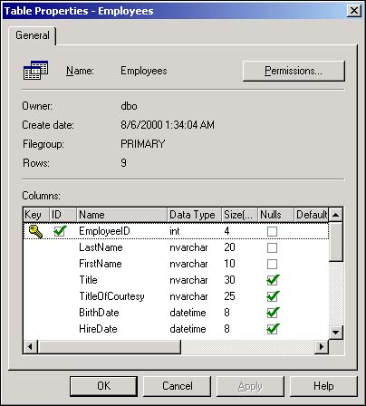

At this point, you have added SQL Server logins and established user accounts in each database within SQL Server. In most situations, you want to restrict the user's access to tables, views, stored procedures, and other objects within this database. This is done by setting permissions on these database objects.
I do not want every user to have read, write, and update permissions on every table within the database. Otherwise, unauthorized users are able to view data that they are not permitted to see. Often, only certain users are permitted to add new records or to delete existing records in a database table. Without object permissions, I have no way of controlling individual user access to the data within a database.
You'll use the Enterprise Manager dialog boxes to assign permissions on the objects within a database. SQL Server provides the following object permissions for tables, views, and stored procedures:
Select. Permission to issue SELECT statements against a table or view to retrieve data.
Insert. Permission that allows the user to execute the INSERT statement to add new records to a table or view.
Update. Permission that allows the UPDATE statement to run, changing the data in a row of a table or view.
Delete. Permission to run the DELETE statement and remove rows from a table or view.
Execute. Permission that allows the user to run stored procedures and functions within the database.
A SQL Server database contains a wide variety of database objects, such as tables, views, and stored procedures. A user account can be assigned specific permissions on each object in a SQL Server database. These permissions direct SQL Server to allow an account to run stored procedures, view and update data that is contained in tables, and perform other database operations.
As you click on the individual object permissions, the check box changes from empty to a green check mark to a red X, as mentioned in the previous How-To.
Open Enterprise Manager and expand the Northwind database's icon.
Expand the Northwind database's Tables icon to display all the tables in Enterprise Manager's right pane.
Right-click on a table in the Tables list, and select Properties from the shortcut menu to open the Table Properties dialog box (see Figure 11.17).

Select the Permissions button in the upper-right corner of the Table Properties dialog box to displaythe Permissions tab (see Figure 11.18).
Select a user or role from the leftmost column, and then click on the check box in any of the Permissions columns.
Each permission on an object has three levels of access:
Grant. SQL Server permits all operations whose permission is set to Grant.
Revoke. The user is unable to perform the operation unless he's been implicitly granted permission through membership in some role (discussed in How-To 11.11) or through a group. Revoke is the default setting for all permissions.
Deny. The user cannot perform a denied operation, even if permission is implicitly granted by role or group membership.
Most often, unless the user has a specific need to be granted or denied permission on an object, you'll leave the permission set to Revoke. This means that the permission is not provided unless the user is given permission through a database role (discussed in the next section). Generally speaking, it is better to provide too little access to database objects than to grant too much access that could lead to confidentiality or data integrity problems. This is why the default permission on SQL Server objects is set to Revoke by default.